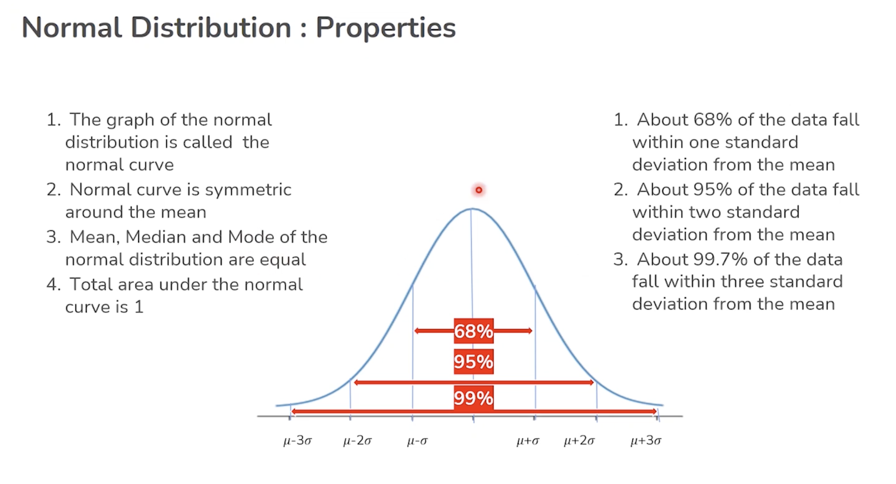
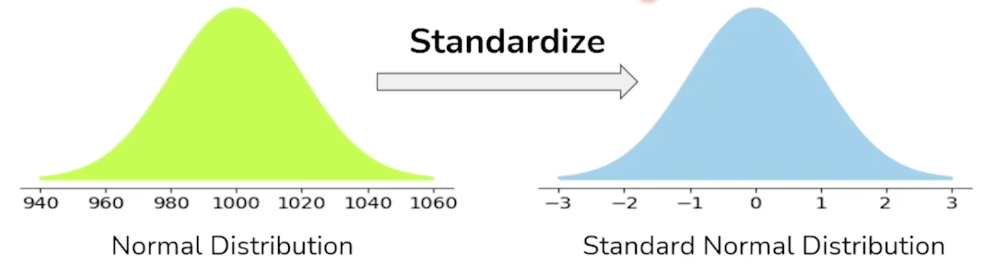

Distributions
Types of distributions
Bernoulli
It's either successful or not.
E.g. has a specific adult ever posted a video online?
x = 1 (success/yes), with prob p
x = 0 (fail/no), with prob 1-p
A Bernoulli distribution is a special case of Binomial Distribution with a single trial.
Binomial
Counts the total bernoulli variables values from a batch of data. E.g. how many drugs have worked on customers from a batch?
Say we have 25 adults. We ask them if they posted a video or not. We can count how many have ever posted a video.
Say
Xis the number of adults who ever posted a video. X coresponds to the binomial distribution.
\(\(P(X = x) = p^x(1-p)^{n-x}\)\) Assumptions for binomial, for the above formula to work: - number of trials (n) is fixed - each trial is independent of the other trials - the are only two possible outcomes for each trial the probability of the success (p) is the same for each trial
If we want to calculate the probability of
Xto be a specific value, say 10, we have: \(P(X = 10) = p^{10}(1-p)^{25-10}\)If let's say the probability of success is 0.3, then $P(X = 10) = 0.3^{10}0.7^{15} = 0.0000059049 * 0.004747561509943 = 2.8033876e-8 $. Pretty low probability.
Uniform
All probabilities are the same. It's equal probable for the variable to take any value from the range of possible values. E.g. the probability of a number to be picked for a lotery game. It's theoretically the same. Or of a number to come on a dice etc.
Descrete uniform
Limited number of options/results.
e.g. month of the year (can be one of 12)
Continuous uniform
A range of unlimited possible options/results.
e.g. tomorrow's temperature (can be any number value, some having higher probability)
Here's a comparison between discrete and continuous variables: | Discrete Variable | Continuous Variable | | --------------------------------------------------------------------| -------------------------------------------------------------------------------------------- | | Takes particular countable values (i.e. integers) | Takes any measured value within a given range (i.e. floats). | | Discrete data is information that has noticeable gaps between values. | Continuous data is information that occurs in a continuous series. | | Discrete data is made up of discrete or distinct values. | Directly in opposition, continuous data includes any value that falls inside a range. | | Discrete data can be counted. | Continuous data is quantifiable.| | Bar graphs are a visual representation of discrete data. | Continuous data are graphically represented using a histogram.| | For discrete data, a classification like 10-19, 20-29,…, etc., are non-overlapping or mutually inclusive. | For continuous data, classifications such as 10-20, 20-30, etc., overlap or are mutually exclusive. | | The discrete function graph exhibits a distinct point that is nonetheless disconnected. | A broken line connects the points on a continuous function graph. | | Examples of frequent discrete data include the number of students, children, shoe size, and so forth. | Some common continuous data types are height, weight, time, temperature, age, etc. |
Normal
Logaritmic scale (Bell curve). E.g. income distribution of a developed country is generally so. Few rich, few poor, many middle.
Takes two parameters: mean (miu) and the standard deviation (sigma). The values are distributed around the mean equally on both sides
Caracteristics:
mean,medianandmodeof the normal distribution are equal- the normal curve is symetric around the
mean- the total area under the normal curve is 1
- 100% of the data is under the curve
Empirical Rule of normal distribution
The Empirical Rule says that about 68% of the population is within one standard deviation from the mean, about 95% is within 2 standard deviations from the mean and about 99% within 3 standard deviations.

Standard normal distribution
The standard distribution always has a mean of 0 and standard deviation of 1.
To work with normal distributions, we first standardise them. See image below: 
We can convert a normal variable X to a standard normal variable Z, given mu is the mean and sigma the standard deviation, using:
\(\(Z = (X-mu)/sigma\)\)
Z(Z-Score/Standard score) is the measure of the number of standard deviations above or below the mean (i.e. left and right of it) that data point falls within.
E.g. if my height has Z-score 1. That means that my height is one standard deviation above average.
import numpy as np
import scipy.stats as stats
from scipy.stats import norm
# probability of data to be less than `x`
norm.cdf(x, mu, sigma)
mu = 500 # mean of original popluation is known
sigma = 25
n = 100 # sample size
alpha = 0.95 # error margin allowed is 0.05
confidence_interv = norm.interval(alpha, loc = mu, scale = sigma/np.sqrt(n))
t-distribution
We use the t-distribution when we don't know the standard deviation of the population.
In this case, we estimate the standard distribution and calculate the confidence interval using the t-distribution.
T-distribution uses a new term, compared with the normal distribution:
degree of freedom of the estimate = number of independent pieces of information that went into calculating the estimate (of the mean). It is always the number of samples used for the Central Limit Theorem, minus one (n-1).
mu = 500 # NOTE this is the calculated one based on random samples. It's the mean of the standard distribution of the means of samples - based on Central Limit Theorem
sigma = 25
n = 100 # sample size
alpha = 0.95 # error margin allowed is 0.05
confidence_interv = t.interval(alpha, df = n-1, loc = mu, scale = sigma/np.sqrt(n))